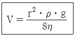
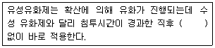
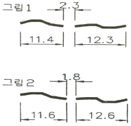

침투비파괴검사기사 (2015-05-31 기출문제)
1과목: 비파괴검사 개론
1. 초음파탐상검사의 특징을 설명한 것 중 틀린 것은?
- 검사결과를 신속히 알 수 있다.
- 표준시험편 또는 대비시험편 등이 필요하다.
- 균열과 같은 미세한 결함에 대해서도 감도가 높다.
- 조대한 결정입자를 가진 시험체의 검사에 적합하다.
(정답률: 69%)

2. 침투탐상검사법의 특징을 기술한 것으로 옳은 것은?
- 장기간 사용한 구조물의 내부 피로균열의 검출에 우수하다.
- 감자성체의 표면결함검출에 자분탐상검사보다 효과적이다.
- 와류탐상검사보다 적용범위가 좁다.
- 방사선투과검사에 비하여 미세한 표면결함검출에 신뢰성이 높다.
(정답률: 66%)
3. 검사장비의 교정이 타 방법에 비해 중요한 조합은?
- 방사선투과검사, 초음파탐상검사
- 초음파탐상검사, 와전류탐상검사
- 초음파탐상검사, 자분탐상검사
- 누설탐상검사, 침투탐상검사
(정답률: 61%)
4. 다음 중 와전류탐상검사의 장점이 아닌 것은?
- 시험체가 고온이거나, 구멍의 내부 등 다른 시험방법을 적용할 수 없는 대상에 사용이 가능하다.
- 결함검출 및 재질검사 등 여러 데이터를 동시에 얻을 수 있다.
- 결함의 종류, 형상, 치수를 정확하게 판별할 수 있다.
- 관, 선, 환봉 등에 대해 고속도로 시험이 가능하다.
(정답률: 64%)
5. 다음 중 엑스선발생장치에 대한 설명으로 틀린 것은?
- 자외선보다 파장이 짧은 광자를 방출한다.
- 전원이 필요하다.
- 원자번호가 낮은 물질로 차폐한다.
- 발생된 방사선강도는 거리제곱에 반비례한다.
(정답률: 62%)
6. 황동 가공재에서 자연균열이 발생하는 주원인은?
- 아연 도금 때문에
- 황의 유동 때문에
- 저온 풀림에 의하여
- 응력 부식에 의하여
(정답률: 73%)
7. Mg-Al 계 합금으로서 소량의 Zn과 Mn을 첨가한 합금은?
- 인바
- 라우탈
- 엘렉트론
- 퍼멀로이
(정답률: 43%)
8. 탄소강에서 망강(Mn)의 영향 중 틀린 것은?
- 상온취성을 방지한다.
- 공구강에서 담금질 파열을 초래하기 쉽다.
- 고온에서 소성을 증가시키며 주조성을 좋게한다.
- Mn은 연신율을 감소시키지 않고 강도를 증가시킨다.
(정답률: 34%)
9. 확산의 방법을 이용하지 않는 열처리법은?
- 질화법
- 침탄법
- 담금질법
- 금속침투법
(정답률: 47%)
10. 분말야금법을 이용한 제품 제조법의 특징을 설명한 것 중 옳은 것은?
- 제품형상의 제한이 크다.
- 후가공으로 절삭가공이 필요하다.
- 성분계의 공용한도의 제한이 있다.
- 용융점이 높은 재료의 경우에도 용융하지 않고 제품을 제조할 수 있다.
(정답률: 64%)
11. 다음 중 경화능을 향상시키는 원소의 영향이 큰 순서에서 작은 순서로 나열된 것은?
- B＞Mn＞Cr＞Cu
- Cu＞Mn＞B＞Cr
- Cr＞Cu＞B＞Mn
- Mn＞Cr＞Cu＞B
(정답률: 48%)
12. 오스테나이트계 스테인리스강의 공식을 방지하기 위한 방법이 아닌 것은?
- 할로겐 이온의 고농도를 피한다.
- 산소농담전지의 형성을 피한다.
- 질산염, 크롬산염 등 부동태화제를 가한다.
- 재료 중의 C를 많게 하거나 Ni, Cr 등을 적게 한다.
(정답률: 59%)
13. 고속도강의 기호로 옳은 것은?
- SM
- SKH
- SPS
- STC
(정답률: 70%)
14. 해드필드(Hadfield) 강이라고 하며, 조직은 오스테나이트고, 가공경화성이 우수한 특수강은?
- Cr강
- Ni-Cr강
- 고 Mn 강
- Cr-Mo 강
(정답률: 59%)
15. 지름이 12mm이고 시험 전 표점거리가 110mm인 탄소강을 최대하중 3000kgf으로 인장시험 한 결과, 시험편이 절단되었을 때 연신율이 15%이었다면 파단시 늘어난 표점길이는 몇 mm인가?
- 115.6
- 116.5
- 120.3
- 126.5
(정답률: 46%)
16. 플라스마 아크용접에 사용되는 플라스마의 온도는 얼마 정도인가?
- 5000~6000℃
- 6000~8000℃
- 10000~30000℃
- 50000~80000℃
(정답률: 65%)
17. 피복아크 용접봉 피복제가 갖추어야 할 성질이 아닌 것은?
- 쉽게 이온화 될 것
- 탈산 능력이 있을 것
- 수분 함량이 많을 것
- 슬래그(slag)를 형성하는 능력이 있을 것
(정답률: 68%)
18. 피닝법(Peening method)의 목적이 아닌 것은?
- 용접변화 경감
- 잔류응력 완화
- 용접부 경화
- 용착금속 균열방지
(정답률: 61%)
19. 피복 아크 용접에서 아크 전압이 30V, 아크 전류가 150A, 용접속도는 15cm/min일 때 용접부에 주어지는 용접 입열량은 몇 Joule/cm인가?
- 22500
- 13500
- 24500
- 18000
(정답률: 52%)
20. 연강용 피복 아크용접봉 중 내균열성이 가장 좋은 것은?
- 고셀룰로스계
- 티탄계
- 고산화철계
- 저수소계
(정답률: 59%)
2과목: 침투탐상검사 원리
21. 침투제의 침투 성능이 우수한가를 결정하는 두가지 대표적인 특성은?
- 표면장력 및 비중
- 접촉각 및 밀도
- 비열 및 접촉각
- 적심성 및 접촉각
(정답률: 79%)
22. 수세성 형광침투탐상시험에서 시험편이 적절히 세척되었는지 확인하는 방법으로 가장 중요한 사항은?
- 시험편의 표면을 문질러 본다.
- 세척 주기를 일정하게 한다.
- 고압의 물로 분사시켜 본다.
- 자외선등 밑에서 세척한다.
(정답률: 69%)
23. 침투탐상시험 장치 중 세척장치의 수온 범위는 다음 중 어느 것이 제일 적당한가?
- 5℃~15℃
- 16℃~38℃
- 40℃~70℃
- 70℃이상
(정답률: 74%)
24. 형광 침투탐상시험법에서 지시의 색은?
- 하얀색의 바탕색에 대해 강한 황녹색의 빛으로 나타난다.
- 녹색의 바탕색에 대해 연한 하얀색의 빛으로 나타난다.
- 자외선 배경에 대해 강한 황녹색의 빛으로 나타난다.
- 붉은색의 바탕색에 대해 강한 황녹색의 빛으로 나타난다.
(정답률: 70%)
25. 건식 현상법의 특성으로 틀린 것은?
- 지시모양의 확대가 적다.
- 일정한 피막을 형성할 수 있어 감도가 좋다.
- 분말 형태이므로 인체에 흡입될 수 있다.
- 결함 지시모양이 선명하여 분해능이 향상된다.
(정답률: 47%)
26. 액체가 스스로 수축하여 면적을 작게 가지려고 하는 응집력이 작용하는데 이것을 무엇이라 하는가?
- 모세관현상
- 표면장력
- 적심성
- 점성
(정답률: 55%)
27. 다음 중 시험체의 표면장력에 관한 식으로 옳은 것은? (단, Γ : 시험체의 표면장력, X : 침투액의 표면장력, Y : 시험체와 침투액 계면의 표면장력, θ : 접촉각이다.)
- Γ = Y + Xㆍcosθ
- Γ = X + Yㆍcosθ
- Γ = Y - Xㆍcosθ
- Γ = X - Yㆍcosθ
(정답률: 60%)
28. 침투탐상시험의 안전관리에 대한 설명으로 옳은 것은?
- 개방된 곳에서는 화기에 주의할 필요는 없다.
- 추후에 검사를 대비하여 필요 이상으로 탐상제를 확보하여 저장 보관해야 한다.
- 저온 상태에서는 제품의 규정된 안내에 따라야 한다.
- 에어로졸 제품은 밀봉된 상태이므로 적사광선의 영향이 거의 없다.
(정답률: 74%)
29. 다음 중 아래 식에서 η가 의미하는 것은? (단, V는 유동속도, r은 모세관의 반지름, ρ는 액체의 밀도, g는 중력가속도이다.)

- 액체의 높이
- 액체의 무게
- 액체의 접촉각
- 액체의 점도
(정답률: 63%)
30. 부적절한 세척에 의해 의사지시가 나타나 재탐상한 결과 의사지시가 나타나지 않았다. 이 경우에 대한 해석으로 가장 적절한 것은?
- 작은 결함이었을 것이다.
- 외부 오염에 의한 지시였을 것이다.
- 그 부위가 과잉 세척되었다.
- 재탐상으로 인해 불연속의 개구부를 막았을 것이다.
(정답률: 63%)
31. 다음 중 침투탐상시험 시 현상처리 과정에서 결함검출 감도가 가장 심각하게 저하되는 경우는?
- 현상제의 온도가 대기 온도보다 높을 때
- 현상제의 피막두께가 두꺼울 때
- 부식방지제가 현상제에 첨가되었을 때
- 탐상 표면을 산이나 알칼리로 세척하였을 때
(정답률: 64%)
32. 침투액의 침투속도 즉 동적 침투인자를 정적 침투인자를 ()(으)로 나눈 값이다. 괄호 안에 알맞은 내용은?
- 침투액의 점도
- 침투액의 표면장력
- 침투액과 시험체간의 접촉각
- 침투액의 휘발성
(정답률: 53%)
33. 침투탐상 시 해로운 영향을 주는 표면 상태가 아닌 것은?
- 거친 용접부 표면
- 젖은 표면
- 기름기가 있는 표면
- 기계가공한 표면
(정답률: 70%)
34. 알칼리 세척방법으로 틀린 것은?
- 시험체 표면의 스케일링 등을 제거하는데 유용하다.
- 알칼리 세척제는 계면 활성제가 포함되어 있는 화합물이다.
- 사용 후 충분히 가열 건조시켜야 한다.
- 페인트나 유지류의 제거에 효과적이다.
(정답률: 44%)
35. 다음 중 침투액이 불연속 부위로 들어가는 현상과 가장 관계가 깊은 것은?
- 침투제의 비중
- 침투제의 점성
- 침투제의 불활성
- 모세관 침투력
(정답률: 67%)
36. 침투탐상검사 전 검사 부품으로부터 효과적으로 절삭유를 제거할 수 있는 방법은?
- 가열법
- 증기 세척법
- 물 세척법
- 급냉법
(정답률: 71%)
37. 모세관 현상을 일으키는 요인이 아닌 것은?
- 응집력
- 표면장력
- 침투력
- 점착력
(정답률: 42%)
38. 무현상법의 현상능력에 영향을 미치는 요인으로 거리가 먼 것은?
- 불연속의 크기
- 시험체의 표면 거칠기
- 표면에 도포된 침투제의 두께
- 침투제의 화학 반응력
(정답률: 42%)
39. 평가대상이 아닌 지시모양의 발생원인이 아닌 것은?
- 불충분한 전처리
- 과도한 유화시간
- 불충분한 세척처리
- 구조가 복잡하여 세척이 곤란한 곳
(정답률: 47%)
40. 침투제의 물리, 화학적 특성을 설명한 것으로 옳은 것은?
- 침투제는 매우 빨리 건조되어야 한다.
- 침투제는 쉽게 제거되어서는 안된다.
- 침투제는 점성이 높아야 한다.
- 침투제는 적심성이 우수해야 한다.
(정답률: 78%)
3과목: 침투탐상검사 시험
41. 침투탐상검사에서 탐상제를 적용하는 방법 중 유독 붓칠법을 사용하지 않도록 주의를 해야 하는 공정은?
- 침투제 적용
- 유화제 적용
- 현상제 적용
- 과잉침투제 제거
(정답률: 67%)
42. 전처리시 탄소강 시험체의 표면에 발생한 부식, 녹, 산화물, 스케일 등의 오염물을 제거하는 방법으로 적절하지 않은 것은?
- 전기 세척
- 용제 세척
- 증기 블라스팅
- 산, 알칼리 세척
(정답률: 24%)
43. 현상제를 선택하는데 고려해야 할 사항으로 틀린 것은?
- 매끄러운 표면에는 건식보다 습식 현상제가 좋다.
- 매우 거친 표면에는 건식 현상제를 사용한다.
- 소형의 고속작업 검사품에는 건식 현상제를 사용하는 것이 신속하고 편리하다.
- 용제 현상제는 폭이 넓고 얕은 결함을 찾는데는 적당하지 않다.
(정답률: 42%)
44. 침투탐상시 용제에 대한 설명으로 옳은 것은?
- 침투 탐상액은 용제를 사용하기 때문에 환기가 필요 하다.
- 침투 탐상액은 용제를 사용하기 때문에 근본적으로 무해하다.
- 침투 탐상액에 사용되는 용제는 고온에서 아무 영향을 미치지 않는다.
- 침투 탐상액은 소방법의 규제 때문에 용제를 사용할 수 없다.
(정답률: 79%)
45. 후유화성 형광침투액의 피로에 대한 점검이 필요할 때 실시하는 점검 항목이 아닌 것은?
- 형광휘도
- 감도
- 수세성
- 수분함유량
(정답률: 35%)
46. 침투탐상검사시 의사지시가 나타날 가능성이 가장 높은 경우는?
- 과도하게 세척한 경우
- 침투액이 차가운 경우
- 현상제의 양이 미흡한 경우
- 전처리 부족 또는 거친 표면인 경우
(정답률: 67%)
47. 유화제에 대한 다음 설명 중 ()안에 알맞은 내용은?

- 건조
- 현상
- 유화
- 예비세척
(정답률: 60%)
48. 통기성이 없는 탱크 내부에서 용제제거성 침투탐상시험을 할 때 주의해야 할 사항으로 가장 적합한 것은?
- 방독 마스크를 사용한다.
- 산소 마스크를 사용하면 배기할 필요가 없다.
- 송풍 및 배기를 충분히 한다.
- 배기만 하면 된다.
(정답률: 80%)
49. 용제제거성 침투액에 의한 탐상시험에서 가장 주의해야 할 것은?
- 유화제의 과량 사용을 피한다.
- 세척제의 과량 사용을 피한다.
- 침투시간이 너무 길지 않았나 확인한다.
- 과잉침투액의 세척이 잘되었는지 확인한다.
(정답률: 30%)
50. 후유화성 형광침투탐상검사시 세척단계에서 과잉세척을 막아줄 수 있는 방법으로 가장 적절한 것은?
- 침투제가 완전히 유화되기 전에 세척한다.
- 침투제가 완전히 유화된 후에 세척한다.
- 과잉침투제가 제거되자마자 세척작업을 중단한다.
- 110℃ 이상의 고온으로 세척한다.
(정답률: 58%)
51. 다음 중 용접부에서 나타나는 불연속은?
- 수축
- 접합선
- 융합불량
- 겹침
(정답률: 48%)
52. 현상제가 결함부에만 부착되어 시간이 경과 하여도 결함지시모양의 확대 및 번짐이 적고, 비교적 실제 결함 형태나 크기에 충실한 결함지시모양을 얻을 수 있는 현상법은?
- 건식현상법
- 수용성 현상제 사용법
- 습식현상법
- 무현상법
(정답률: 54%)
53. 다음 중 침투탐상시험의 유화처리에 대한 설명으로 옳지 않은 것은?
- 시험면에 침투처리하고 소정의 침투시간이 경과한 후 수세성을 주기 위해 유화제를 도포처리 하는 과정이다.
- 시험면에 유화제를 적용한 후에는 유화제와 침투제가 잘 혼합되도록 흔들어 주거나 휘저어 섞어 준다.
- 유화처리 방법은 유화제를 시험면에 잘 뿌려주는 방법을 선택한다.
- 유화처리란 세척처리를 할 때 물로 세척하기 용이하도록 하는 작업이다.
(정답률: 50%)
54. 후유화성 형광침투액을 사용할 때 자외선 등을 사용할 두 곳은?
- 침투액이 적당히 도포되었는가, 유화제가 적당히 도포되었는가의 부분
- 현상제가 적당히 도포되었는가, 침투액이 적당히 도포되었는가의 부분
- 잉여 침투액이 적당히 제거되었는가, 세척이 잘 되었는가의 부분
- 유화제가 적당히 도포되었는가, 침투액이 올바른가 여부를 검사하는 부분
(정답률: 72%)
55. 유화제의 적정한 성능을 유지하기 위해서는 주기적인 관리 및 점검이 필요하다. 유화제의 점검 사항이 아닌 것은?
- 농도
- 점성
- 형광휘도
- 수분함유량
(정답률: 56%)
56. 매우 지저분하고 표면에 그이리스가 묻어 있는 부품의 표면처리에는 물을 주원료로 제조된 화학약품의 세척제가 사용되는데, 이 후 반드시 조치해야 할 후속조치로 옳은 것은?
- 용제 세척제로 다시 한 번 세척해야 한다.
- 표면에는 어떠한 잔류물도 남아 있지 않도록 완전히 세정해야 한다.
- 표면 개구부에 청정제가 들어 있지 못하도록 열을 가하여 제거시킨다.
- 휘발성 용제 세척제로 다시 한 번 세척해야 한다.
(정답률: 65%)
57. 단속적으로 용접이 된 단조겹침에서 나타날 수 있는 지시의 형태는?
- 지시가 나타나지 않음
- 매우 가늘고 연속된 선으로 나타남
- 넓고 연속적인 선으로 나타남
- 단속적인 선으로 나타남
(정답률: 46%)
58. 이 지시에 대하여 옳게 분류한 것은? (단, KS B 0816을 기준으로 분류하며, 그림의 숫자 단위는 mm이다.)

- 분산결함이며, 11.4mm 1개, 12.3mm 1개로 분류한다.
- 분산결함이며, 11.6mm 1개, 12.6mm 1개로 분류한다.
- 연속결함이며, 24.2mm 1개로 분류한다.
- 연속결함이며, 26.0mm 1개로 분류한다.
(정답률: 56%)
59. 주물의 입구 절단 부위에 나타나는 지시인 것은?
- 담근 균열
- 기공
- 열간 균열
- 수축
(정답률: 38%)
60. 일반적으로 용접을 진행하다 멈추는 곳의 용접비드 끝에 오목하게 파여져 있는 부분을 무슨결함이라고 하는가?
- 언더컷
- 크레이터
- 오버랩
- 용입 부족
(정답률: 51%)
4과목: 침투탐상검사 규격
61. 침투탐상 시험방법 및 침투지시모양의 분류(KS B 0816)에서 규정하는 용제제거성 형광침투액을 사용하는 검사방법을 표시하는 부호는?
- FA
- FC
- VA
- VC
(정답률: 71%)
62. 보일러 및 압력용기에 대한 침투탐상검사(ASME Sec.V Art.6)에 습식현상제의 적용 방법으로 틀린 것은?
- 수성 현상제는 건조한 표면에 적용 가능하다.
- 수성 현상제는 습한 표면에 적용 가능하다.
- 비수성 현상제는 습한 표면에 적용 가능하다.
- 비수성 현상제는 건조한 표면에 적용 가능하다.
(정답률: 42%)
63. 침투탐상 시험방법 및 침투지시모양의 분류(KS B 0816)에 의한 결함의 분류에서 독립 결함 중 선상 결함은 갈라짐 이외의 결함으로써 그 길이가 나비의 몇 배 이상인 것을 말하는가?
- 2배
- 3배
- 5배
- 7배
(정답률: 78%)
64. ASME Sec.Ⅷ, Div.1의 침투탐상시험 중 합격기준에 대한 설명으로 틀린 것은?
- 선형 관련지시는 길이에 관계없이 불합격이다.
- 3/6 inch(5mm) 이상인 원형관련 지시는 불합격이다.
- 이웃불연속 모서리 사이의 간격이 1/16inch(1.56mm) 이하로 분리되어 일직선상에 3개 또는 그 이상으로 배열되어 있는 원형 관현지시는 불합격이다.
- 관련지시 모양은 실제의 불연속보다 크게 나타날 수도 있으나, 합격 여부의 판정은 지시모양의 크기를 근거로 한다.
(정답률: 42%)
65. 침투탐상 시험방법 및 침투지시모양의 분류(KS B 0816)에서 세척처리 및 제거처리에 대한 설명으로 틀린 것은?
- 세척처리의 수온으로는 특별한 규정이 없을 때 15~50℃의 범위로 한다.
- 스프레이 노즐을 사용하여 세척시에는 특별한 규정이 없는 한 275kPa 이하로 한다.
- 형광침투액을 사용한 시험에서 세척처리는 자외선을 비추어 처리의 강도를 확인하면서 한다.
- 제거처리시 시험체의 흠 속에 침투되어 있는 침투액을 유출시키는 과도한 처리는 안된다.
(정답률: 51%)
66. 보일러 및 압력용기에 대한 침투탐상검사(ASME Sec.V Art.24 SE-165)에서 표면의 전처리 방법 중 불연속의 변형으로 시험 결과의 감도 저하를 발생할 우려가 가장 큰 것은?
- 증기 세척
- 초음파 세척
- 샌드 블라스트
- 산 세척
(정답률: 62%)
67. 침투탐상 시험방법 및 침투지시모양의 분류(KS B 0816)에 의한 시험기록을 작성할 때 시험장소에서의 기온 및 침투액의 온도를 반드시 기재해야 하는 경우는?
- 기온이 10℃일 때
- 액온이 20℃일 때
- 기온이 30℃일 때
- 액온이 40℃일 때
(정답률: 63%)
68. 침투탐상 시험방법 및 침투지시모양의 분류(KS B 0816)에서 후유화성 형광 침투액(물 베이스 유화제)에 무현상법으로 시험할 경우 기호 표시가 옳은 것은?
- FD-S
- VD-S
- FD-N
- VD-W
(정답률: 65%)
69. 보일러 및 압력용기에 대한 침투탐상검사(ASME Sec.V Art.6)에 따른 탐상제의 불순물 관리에 해당되지 않는 재료는?
- 니켈 합금
- 알루미늄 합금
- 오스테아니트계 스테인리스강
- 티타늄
(정답률: 40%)
70. 보일러 및 압력용기에 대한 침투탐상검사(ASME Sec.V Art.24 SE-165)에 따라 소형 자동차 부품을 수세성 염색침투탐상할 때 권고되는 건조오븐의 최대 허용 온도는?
- 45℃
- 71℃
- 92℃
- 130℃
(정답률: 58%)
71. 침투탐상 시험방법 및 침투지시모양의 분류(KS B 0816)에서 함격한 시험체의 표시 중 전수검사인 경우의 표시기호는?
- A
- F
- K
- P
(정답률: 75%)
72. 보일러 및 압력용기에 대한 침투탐상검사(ASME Sec.V Art.24 SE-165)에서 다음 어느 재료에 대하여 침투탐상재료 중에 포함되어 있는 할로겐의 함유량을 제한하고 있는가?
- 오스테나이트계 스테인레스 및 구리
- 오스테나이트계 스테인레스 및 티타늄
- 니켈 및 알루미늄
- 니켈 및 구리
(정답률: 45%)
73. 침투탐상 시험방법 및 침투지시모양의 분류(KS B 0816)에서는 결함지시모양이 거의 동일 선상에 연속하여 존재하고 그 상호 간의 거리가 일정거리 이하이면 상호 간의 거리를 포함하여 연속된 하나의 지시모양으로 간주한다. 이 규격에서 정한 일정거리는 얼마인가?
- 1mm
- 2mm
- 3mm
- 4mm
(정답률: 81%)
74. 보일러 및 압력용기에 대한 침투탐상검사(ASME Sec.V Art.6)에 따른 침투탐상시험에서 문서화를 위한 필수 시험기록에 포함되지 않는 것은?
- 절차서 번호
- 침투탐상제의 종류
- 발주자명
- 시험자명
(정답률: 64%)
75. 침투탐상 시험방법 및 침투지시모양의 분류(KS B 0816)에서 규정한 침투지시 모양의 관찰 시기는?
- 현상제 적용 전 7~60분 사이
- 현상제 적용 후 7~60분 사이
- 건조처리 전 7~60분 사이
- 건조처리 후 7~60분 사이
(정답률: 67%)
76. 주강품-침투탐상검사(KS B IOS 4987)애 따른 검사에서 검출된 주강품의 불연속 지시 결과 판정에 대한 사항 중 틀린 것은?
- 지시 관찰 수단으로는 육안이나 3배 이하의 확대경을 사용하여 수행한다.
- 연결형 지시는 2mm 이하로 분리된 선형 또는 비선형 지시와 최소한 3개의 지시를 포함한다.
- 평가 할 지시에 대해 가장 불리한 위치에 1⑤mm×148mm를 측정할 수 있는 틀을 배치하는 것이 필요하다.
- 엄격도의 분류는 불연속의 면적으로 결정한다.
(정답률: 32%)
77. 침투탐상 시험방법 및 침투지시모양의 분류(KS B 0816)에 따라 일반적으로 15~50℃의 범위에서 표준이 되는 현상시간은?
- 5분
- 7분
- 10분
- 15분
(정답률: 50%)
78. 침투탐상 시험방법 및 침투지시모양의 분류(KS B 0816)에서는 침투탐상시험에서 얻어진 독립결함을 모두 몇 가지 종류로 분류하는가?
- 2
- 3
- 4
- 5
(정답률: 67%)
79. 보일러 및 압력용기에 대한 침투탐상검사(ASME Sec.V Art.24 SE-165)에 따른 탐상시험으로 검출할 수 없는 결함은?
- 단조 겹침
- 크레이터 균열
- 그라인딩 균열
- 비금속 내부 개재물
(정답률: 63%)
80. 침투탐상 시험방법 및 침투지시모양의 분류(KS B 0816)에 따른 형광침투탐상시험에서 침투지시모양을 관찰하는 장소의 최대 밝기(lx)는 얼마인가?
- 1
- 5
- 20
- 500
(정답률: 76%)